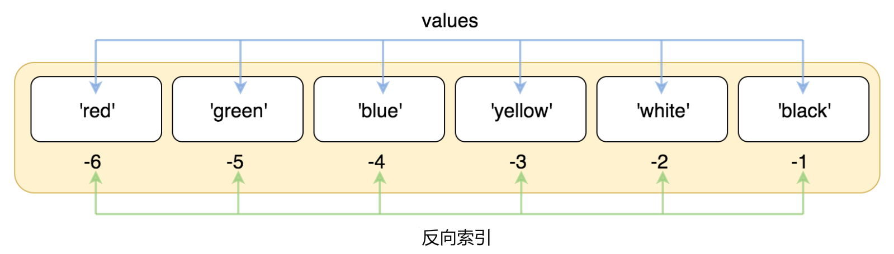

Python基础教程#
我们今天只介绍我们需要用到的python基础语法，想要更深入的学习，部分同学可以在大学计算机基础这门课中学到，也可以通过自学
可以通过下列线上资源自学：
-
本教程中Python基础教程部分内容，大部分来自于此教程
对于Python在机器学习或者数据分析的相关教程，可以在B站上寻找相关内容
Python基础语法#
编码#
默认情况下，Python 3 源码文件以 UTF-8 编码，所有字符串都是 unicode 字符串。
标识符#
第一个字符必须是字母（或其他语言中的字符）或下划线
_。标识符的其他的部分由字母（或其他语言中的字符）、数字和下划线组成。
标识符对大小写敏感。
在 Python 3 中，可以用中文作为变量名，非 ASCII 标识符也是允许的了。
下述标识符都是允许的
a = 1
_a = 2
啊 = 3
_啊 = 4
α = 5
_α = 6
print(a, _a, 啊, _啊, α, _α)
1 2 3 4 5 6
Python保留字#
保留字即关键字，我们不能把它们用作任何标识符名称。Python 的标准库提供了一个 keyword 模块，可以输出当前版本的所有关键字：
import keyword
keyword.kwlist
['False',
'None',
'True',
'and',
'as',
'assert',
'async',
'await',
'break',
'class',
'continue',
'def',
'del',
'elif',
'else',
'except',
'finally',
'for',
'from',
'global',
'if',
'import',
'in',
'is',
'lambda',
'nonlocal',
'not',
'or',
'pass',
'raise',
'return',
'try',
'while',
'with',
'yield']
#下面的语句会报错
# False = 1
注释#
Python中单行注释以#开头，多行注释可以用多个#，也可以用'''或"""
# 第一个注释
# 第二个注释
'''
第三个注释
第四个注释
'''
"""
第五个注释
第六个注释
"""
print ("Hello, Python!") # 第七个注释
Hello, Python!
行与缩进#
python最具特色的就是使用缩进来表示代码块，不需要使用大括号{} 。
缩进的空格数是可变的，但是同一个代码块的语句必须包含相同的缩进空格数。实例如下：
if True:
print ("True")
else:
print ("False")
True
条件控制语句#
Python中一般使用if – elif – else来实现条件控制，其一般形式如下：
if condition_1:
statement_block_1
elif condition_2:
statement_block_2
else:
statement_block_3
如果 “condition_1” 为True，将执行 “statement_block_1” 块语句
如果 “condition_1” 为False，将判断 “condition_2”
如果 “condition_2” 为True，将执行 “statement_block_2” 块语句
如果 “condition_2” 为False，将执行”statement_block_3”块语句
注意：
每个条件后面要使用冒号
:表示接下来是满足条件后要执行的语句块使用缩进来划分语句块，相同缩进数的语句在一起组成一个语句块
在Python中没有
switch...case语句，但在Python3.10版本添加了match...case，功能也类似，这里不再介绍。
以下为if中常用的操作运算符:
操作符 |
描述 |
|---|---|
|
小于 |
|
小于或等于 |
|
大于 |
|
大于或等于 |
|
等于，比较两个值是否相等 |
|
不等于 |
下面展示了一个条件控制语句的例子
age = 3
if age <= 0:
print("你是在逗我吧!")
elif age == 1:
print("相当于 14 岁的人。")
elif age == 2:
print("相当于 22 岁的人。")
elif age > 2:
human = 22 + (age -2)*5
print("对应人类年龄: ", human)
对应人类年龄: 27
循环语句#
while循环#
while循环的一般形式如下：
while <expr>:
<statement(s)>
else:
<additional_statement(s)>
当
<expr>为真时，将会执行<statement(s)>语句，执行完毕后继续判断<expr>真假，如果为真则继续执行<statement(s)>当
<expr>为假时，则会执行<additional_statement(s)>语句
下面展示了一个使用while循环的例子
n = 100
sum0 = 0
counter = 1
while counter <= n:
sum0 = sum0 + counter
counter += 1
else:
print("1 到 %d 之和为: %d" % (n,sum0))
1 到 100 之和为: 5050
for循环#
for循环的一般形式如下：
for <variable> in <sequence>:
<statement(s)>
else:
<additional_statement(s)>
<variable>会依次取<sequence>中的元素，并执行<statement(s)>语句<sequence>中的元素被取完后，会执行<additional_statement(s)>语句，并退出循环
下面展示了两个使用for循环的例子
n = 100
sum0 = 0
for i in range(1,n + 1):
sum0 += i
else:
print("1 到 %d 之和为: %d" % (n,sum0))
1 到 100 之和为: 5050
word = 'runoob'
for letter in word:
print(letter)
r
u
n
o
o
b
break与continue语句#
break语句可以跳出for和while的循环体。如果你从for或while循环中终止，任何对应的循环else块将不执行
continue语句被用来告诉Python跳过当前循环块中的剩余语句，然后继续进行下一轮循环
#使用break语句会跳出循环体
word = 'runoob'
for letter in word:
if letter == 'o':
break
print(letter)
r
u
n
#使用continue语句会跳过当前循环中的剩余语句，然后进行下一轮循环
word = 'runoob'
for letter in word:
if letter == 'o':
continue
print(letter)
r
u
n
b
Python基本数据类型#
Python 中的变量不需要声明。每个变量在使用前都必须赋值，变量赋值以后该变量才会被创建。在 Python 中，变量就是变量，它没有类型，我们所说的”类型”是变量所指的内存中对象的类型。等号（=）用来给变量赋值。等号（=）运算符左边是一个变量名,等号（=）运算符右边是存储在变量中的值。
counter = 100 # 整型变量
miles = 1000.0 # 浮点型变量
name = "runoob" # 字符串
flag = False # 布尔型变量
print(counter)
print(miles)
print(name)
print(flag)
100
1000.0
runoob
False
我们可以使用type函数来判断一个变量的数据类型
counter = 100 # 整型变量
miles = 1000.0 # 浮点型变量
name = "runoob" # 字符串
flag = False # 布尔型变量
print(type(counter))
print(type(miles))
print(type(name))
print(type(flag))
<class 'int'>
<class 'float'>
<class 'str'>
<class 'bool'>
标准数据类型#
Python3 中常见的数据类型有：
Number（数字）
String（字符串）
bool（布尔类型）
List（列表）
Tuple（元组）
Set（集合）
Dictionary（字典）
在本教程中，我们不介绍Tuple（元组）和Set（集合）
列表#
序列是 Python 中最基本的数据结构。序列中的每个值都有对应的位置值，称之为索引。列表都可以进行的操作包括索引，切片，加，乘，检查成员。此外，Python 已经内置确定序列的长度以及确定最大和最小的元素的方法。列表是最常用的 Python 数据类型，它可以作为一个方括号内的逗号分隔值出现。列表的数据项不需要具有相同的类型。
创建一个列表，只要把逗号分隔的不同的数据项使用方括号括起来即可。如下所示：
list1 = ['Google', 'Runoob', 1997, 2000]
list2 = [1, 2, 3, 4, 5 ]
list3 = ["a", "b", "c", "d"]
list4 = ['red', 'green', 'blue', 'yellow', 'white', 'black']
访问列表中的值#
列表索引从0开始，第二个索引是1，依此类推。
通过索引列表可以进行截取、组合等操作。

list = ['red', 'green', 'blue', 'yellow', 'white', 'black']
print(list[0])
print(list[1])
print(list[2])
red
green
blue
索引也可以从尾部开始，最后一个元素的索引为-1，往前一位为-2，以此类推。

list = ['red', 'green', 'blue', 'yellow', 'white', 'black']
print(list[-1])
print(list[-2])
print(list[-3])
black
white
yellow
使用下标索引来访问列表中的值，同样你也可以使用方括号[]的形式截取字符，如下所示：
nums = [10, 20, 30, 40, 50, 60, 70, 80, 90]
print(nums[2:7])
[30, 40, 50, 60, 70]
更新列表#
你可以对列表的数据项进行修改或更新，你也可以使用append()方法来添加列表项，也可以使用del语句来删除列表的的元素
list = ['Google', 'Runoob', 1997, 2000]
print ("原始列表:", list)
list[2] = 2001
print ("修改第三个元素后的列表", list)
list.append('Baidu')
print ("增加一项后的列表 : ", list)
del list[2]
print ("删除第三个元素后的列表: ", list)
原始列表: ['Google', 'Runoob', 1997, 2000]
修改第三个元素后的列表 ['Google', 'Runoob', 2001, 2000]
增加一项后的列表 : ['Google', 'Runoob', 2001, 2000, 'Baidu']
删除第三个元素后的列表: ['Google', 'Runoob', 2000, 'Baidu']
函数与方法#
下表列出了一些常用的与列表有关的函数
序号 |
函数 |
描述 |
|---|---|---|
1 |
len(list) |
列表元素个数 |
2 |
max(list) |
返回列表元素最大值 |
3 |
min(list) |
返回列表元素最小值 |
4 |
list(seq) |
将元组转换为列表 |
下表列出了一些常用的列表对象可以使用的方法
序号 |
方法 |
描述 |
|---|---|---|
1 |
list.append(obj) |
在列表末尾添加新的对象 |
2 |
list.count(obj) |
统计某个元素在列表中出现的次数 |
3 |
list.extend(seq) |
在列表末尾一次性追加另一个序列中的多个值（用新列表扩展原来的列表） |
4 |
list.index(obj) |
从列表中找出某个值第一个匹配项的索引位置 |
5 |
list.insert(index, obj) |
将对象插入列表 |
6 |
list.pop([index=-1]) |
移除列表中的一个元素（默认最后一个元素），并且返回该元素的值 |
7 |
list.remove(obj) |
移除列表中某个值的第一个匹配项 |
8 |
list.reverse() |
反向列表中元素 |
9 |
list.sort(key=None, reverse=False) |
对原列表进行排序 |
10 |
list.clear() |
清空列表 |
11 |
list.copy() |
复制列表 |
操作符+和*也可以作用于列表，分别表示列表的拼接于重复
print(['Hi']*4)
print(['Hi']*4 + ['Python'])
['Hi', 'Hi', 'Hi', 'Hi']
['Hi', 'Hi', 'Hi', 'Hi', 'Python']
字典#
字典是另一种可变容器模型，且可存储任意类型对象。
字典的每个键值key=>value对用冒号:分割，每个对之间用逗号(,)分割，整个字典包括在花括号{}中 ,格式如：d = {key1 : value1, key2 : value2, key3 : value3 }

注意：
dict作为Python的关键字和内置函数，变量名不建议命名为dict。键必须是唯一的，但值则不必。
值可以取任何数据类型，但键必须是不可变的，如字符串，数字。
使用空的花括号
{}可以创建一个空的字典，使用dict()也可以创建一个空字典
一个简单的字典示例如下所示：
tinydict = {'name': 'runoob', 'likes': 123, 'url': 'www.runoob.com'}
访问字典里面的值#
把相应的键放入到方括号中，即可访问对应的值。
注意：
如果用字典里没有的键访问数据，会输出错误
tinydict = {'Name': 'Runoob', 'Age': 7, 'Class': 'First'}
print ("tinydict['Name']: ", tinydict['Name'])
print ("tinydict['Age']: ", tinydict['Age'])
tinydict['Name']: Runoob
tinydict['Age']: 7
修改字典#
向字典添加新内容的方法是增加新的键/值对，修改或删除已有键/值对如下实例:
tinydict = {'Name': 'Runoob', 'Age': 7, 'Class': 'First'}
tinydict['Age'] = 8 # 更新 Age
tinydict['School'] = "菜鸟教程" # 添加信息
del tinydict['Name'] #删除Name
print ("tinydict['Age']: ", tinydict['Age'])
print ("tinydict['School']: ", tinydict['School'])
print ("Name" in tinydict)
tinydict['Age']: 8
tinydict['School']: 菜鸟教程
False
函数与方法#
下表列出了一些常用的与字典有关的函数
序号 |
函数 |
描述 |
|---|---|---|
1 |
len(dict) |
计算字典元素个数，即键的总数 |
2 |
str(dict) |
输出字典，可以打印的字符串表示 |
下表列出了一些常用的字典对象可以使用的方法
序号 |
方法 |
描述 |
|---|---|---|
1 |
dict.clear() |
删除字典内所有元素 |
2 |
dict.copy() |
返回一个字典的浅复制 |
3 |
dict.fromkeys() |
创建一个新字典，以序列seq中元素做字典的键，val为字典所有键对应的初始值 |
4 |
dict.get(key, default=None) |
返回指定键的值，如果键不在字典中返回 default 设置的默认值 |
5 |
key in dict |
如果键在字典dict里返回true，否则返回false |
6 |
dict.items() |
以列表返回一个视图对象 |
7 |
dict.keys() |
返回一个视图对象 |
8 |
dict.setdefault(key, default=None) |
和get()类似, 但如果键不存在于字典中，将会添加键并将值设为default |
9 |
dict.update(dict2) |
把字典dict2的键/值对更新到dict里 |
10 |
dict.values() |
返回一个视图对象 |
11 |
dict.pop(key[,default]) |
删除字典 key（键）所对应的值，返回被删除的值。 |
12 |
dict.popitem() |
返回并删除字典中的最后一对键和值。 |
tinydict = {'Name': 'Runoob', 'Age': 7, 'Class': 'First'}
keys = tinydict.keys()
items = tinydict.items()
values = tinydict.values()
print(keys)
print(items)
print(values)
tinydict.update({'School':"菜鸟教程"})
print(keys)
print(items)
print(values)
dict_keys(['Name', 'Age', 'Class'])
dict_items([('Name', 'Runoob'), ('Age', 7), ('Class', 'First')])
dict_values(['Runoob', 7, 'First'])
dict_keys(['Name', 'Age', 'Class', 'School'])
dict_items([('Name', 'Runoob'), ('Age', 7), ('Class', 'First'), ('School', '菜鸟教程')])
dict_values(['Runoob', 7, 'First', '菜鸟教程'])